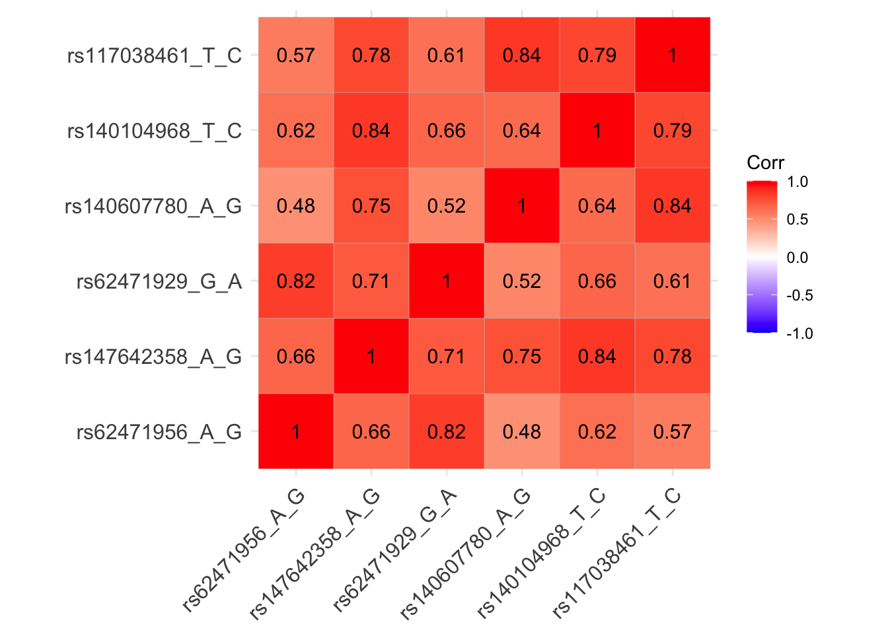
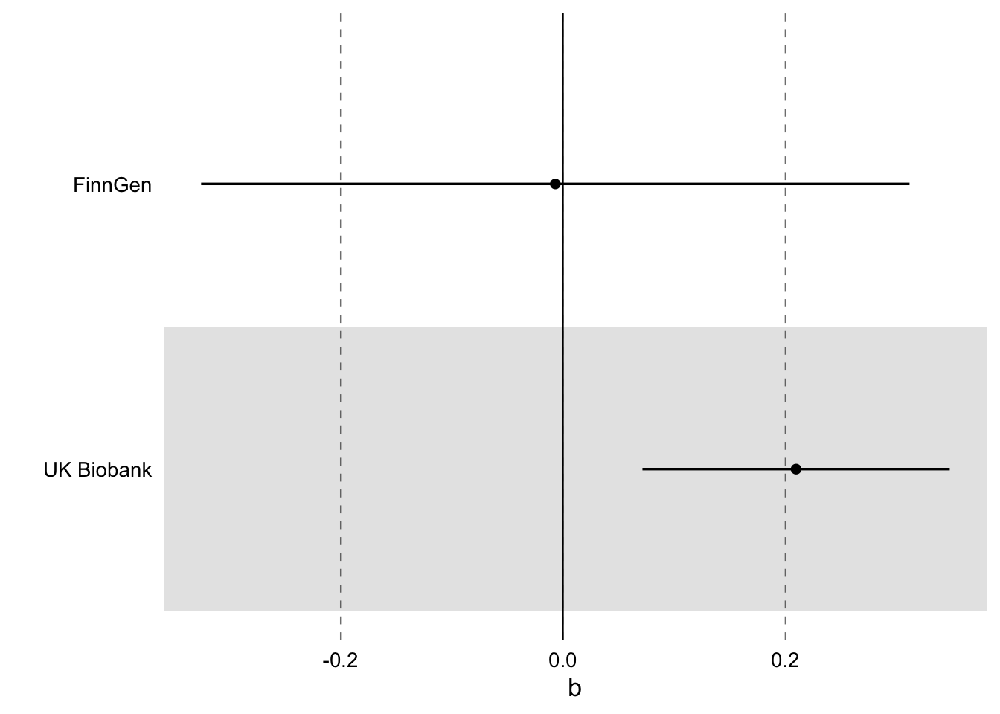
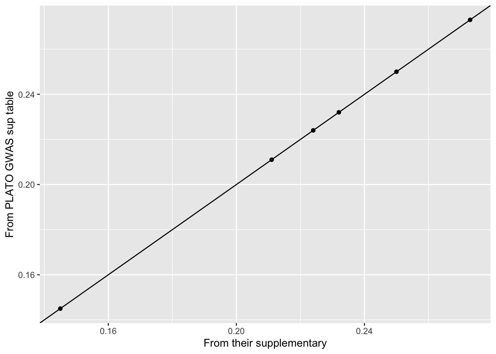
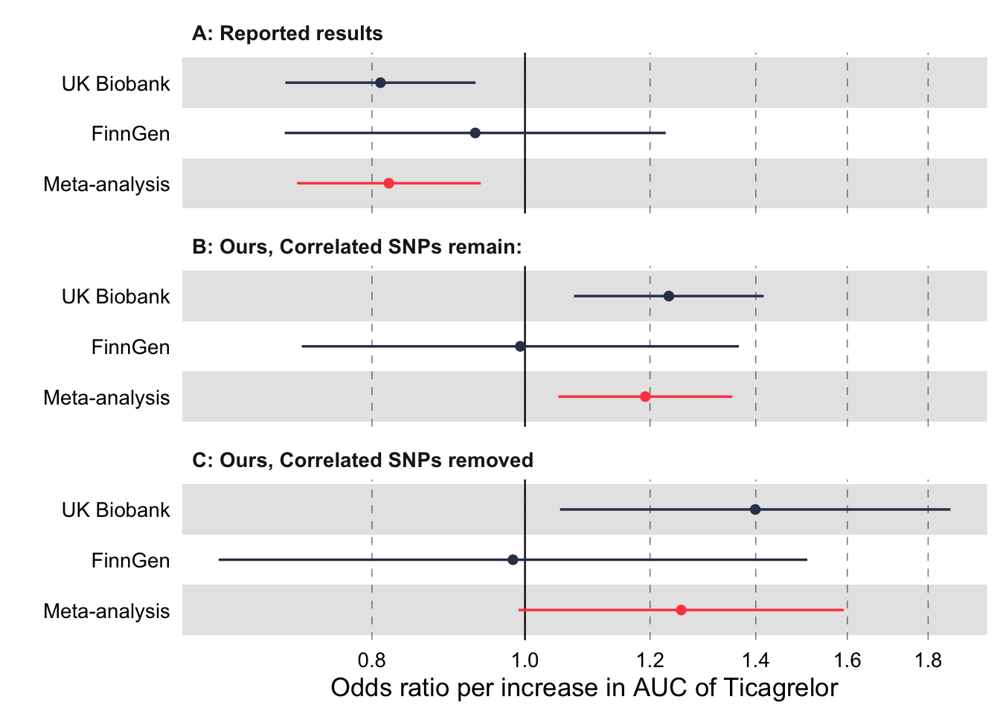

pacman::p_load(tidyverse, TwoSampleMR, rsnps, meta, ggforestplot, patchwork)testing_ticagrelor
Load packages
Bring in the ticag snps and check it’s worked
(yep, although the first row can be dropped)
raw_ticag_data <- read_csv("raw_data/ticag_snps.csv") %>%
janitor::clean_names()Rows: 24 Columns: 12
── Column specification ────────────────────────────────────────────────────────
Delimiter: ","
chr (4): SNP, Gene, Alleles, p-value
dbl (8): Chr, Pos, MAF, N, Beta, SE(Beta), Info, Sift
ℹ Use `spec()` to retrieve the full column specification for this data.
ℹ Specify the column types or set `show_col_types = FALSE` to quiet this message.head(raw_ticag_data)# A tibble: 6 × 12
chr snp pos gene alleles maf n beta se_beta p_value info
<dbl> <chr> <dbl> <chr> <chr> <dbl> <dbl> <dbl> <dbl> <chr> <dbl>
1 NA <NA> NA <NA> (major… NA NA NA NA <NA> NA
2 7 rs6247… 9.94e7 CYP3… A/G 0.034 3751 0.211 0.027 1.07x1… 0.746
3 7 rs6247… 9.94e7 CYP3… G/A 0.034 3751 0.211 0.027 1.32x1… 0.748
4 7 rs3559… 9.94e7 CYP3… A/G 0.035 3751 0.207 0.027 1.45x1… 0.750
5 7 rs6247… 9.95e7 CYP3… C/T 0.031 3751 0.203 0.028 7.97x1… 0.746
6 7 rs1826… 9.94e7 CYP3… C/G 0.007 3751 0.5 0.071 1.75x1… 0.551
# ℹ 1 more variable: sift <dbl>Now, let’s see how many of these are truly independent using the thresholds they use. Have to switch to numeric. Using standard TwoSampleMR settings, we only get one SNP…
standard_approach <- raw_ticag_data %>%
mutate(p_value = gsub("x10", "e", p_value)) %>%
mutate(p_value = as.numeric(p_value)) %>%
rename(SNP = snp, pval.exposure = p_value) %>%
drop_na() %>%
clump_data(clump_r2 = 0.001, clump_kb = 10000)API: public: http://gwas-api.mrcieu.ac.uk/Please look at vignettes for options on running this locally if you need to run many instances of this command.Only one SNP for mpJ8thSo why do they get 7 SNPs? It’s because they alter the clumping threshold to be 100kb, not 10,000kb
their_approach <- raw_ticag_data %>%
mutate(p_value = gsub("x10", "e", p_value)) %>%
mutate(p_value = as.numeric(p_value)) %>%
rename(SNP = snp, pval.exposure = p_value) %>%
drop_na(SNP) %>%
clump_data(clump_r2 = 0.001, clump_kb = 100)Please look at vignettes for options on running this locally if you need to run many instances of this command.Clumping 1MtWPG, 23 variants, using EUR population referenceRemoving 17 of 23 variants due to LD with other variants or absence from LD reference panelIs this disingenious - are the SNPs truly in LD? Let’s have a look:
Yep: they are in a HUGE amount of LD, the correlation between these SNPs is massive:
matrix_snps <- ieugwasr::ld_matrix(variants = their_approach$SNP)Please look at vignettes for options on running this locally if you need to run many instances of this command.p1 <- ggcorrplot::ggcorrplot(matrix_snps, hc.order = F, lab = T)
p1
Ok, let’s replicate the MR:
exposure <- their_approach %>%
transmute(
SNP,
effect_allele.exposure = substring(alleles,1,1),
other_allele.exposure = substring(alleles,3,3),
beta.exposure = beta,
se.exposure = se_beta,
exposure ="ticagrelor",
id.exposure = "ticagrelor",
eaf.exposure = maf,
pval.exposure = pval.exposure
)
outcome <- extract_outcome_data(exposure$SNP, c("finn-b-AB1_SEPSIS","ieu-b-4980")) %>%
mutate(outcome = if_else(str_detect(outcome,"4980"), "UK Biobank", "FinnGen"))Extracting data for 6 SNP(s) from 2 GWAS(s)Finding proxies for 1 SNPs in outcome finn-b-AB1_SEPSISExtracting data for 1 SNP(s) from 1 GWAS(s)dat <- harmonise_data(exposure, outcome)Harmonising ticagrelor (ticagrelor) and FinnGen (finn-b-AB1_SEPSIS)Harmonising ticagrelor (ticagrelor) and UK Biobank (ieu-b-4980)res_mr <- mr(dat)Analysing 'ticagrelor' on 'finn-b-AB1_SEPSIS'Analysing 'ticagrelor' on 'ieu-b-4980'res_mr %>%
filter(method == "Inverse variance weighted") %>%
ggforestplot::forestplot(name = outcome, estimate = b, se = se)
So, we can replicate it but it’s in the wrong direction: why?
Have they got the alleles wrong: let’s go back to the original paper (where we get our data from, the PLATO GWAS): yep, they confirm that the beta is with respect to the minor allele. But if we look at their S2, they call the major and minor alleles wrong.
Let’s bring in their sup table describing the IV’s and compare with our table: yep, we have the same SNPs
d <- read_csv("raw_data/their_exposure_from_sup.csv") %>%
janitor::clean_names()Rows: 6 Columns: 12
── Column specification ────────────────────────────────────────────────────────
Delimiter: ","
chr (4): exposure_their, SNP, Minor
allele, Major
allele
dbl (8): Chr, Position, MAF, Beta, SE, P-value, R-square, F-statistic
ℹ Use `spec()` to retrieve the full column specification for this data.
ℹ Specify the column types or set `show_col_types = FALSE` to quiet this message.d %>%
rename(SNP = snp) %>%
left_join(exposure) %>%
ggplot(aes(x = beta, y = beta.exposure)) +
geom_point() +
geom_abline() +
xlab("From their supplementary") +
ylab("From PLATO GWAS sup table")Joining with `by = join_by(SNP)`
But do the major and minor alleles match?
No:
d %>%
rename(SNP = snp) %>%
left_join(exposure) %>%
select(SNP, minor_allele, effect_allele.exposure, maf, eaf.exposure)Joining with `by = join_by(SNP)`# A tibble: 6 × 5
SNP minor_allele effect_allele.exposure maf eaf.exposure
<chr> <chr> <chr> <dbl> <dbl>
1 rs62471956 G A 0.034 0.034
2 rs147642358 G A 0.022 0.022
3 rs62471929 A G 0.047 0.047
4 rs140607780 G A 0.016 0.016
5 rs140104968 C T 0.019 0.019
6 rs117038461 C T 0.017 0.017Ok, which is the ‘true’ minor allele according to1kg?
ncbi_snp <- rsnps::ncbi_snp_query(d$snp)Getting info about the following rsIDs: rs62471956, rs147642358, rs62471929, rs140607780, rs140104968, rs117038461d %>%
rename(SNP = snp) %>%
left_join(exposure) %>%
select(SNP, minor_allele, effect_allele.exposure, maf) %>%
mutate(ncbi_minor = ncbi_snp$minor, ncbi_maf = ncbi_snp$maf)Joining with `by = join_by(SNP)`# A tibble: 6 × 6
SNP minor_allele effect_allele.exposure maf ncbi_minor ncbi_maf
<chr> <chr> <chr> <dbl> <chr> <dbl>
1 rs62471956 G A 0.034 A 0.0341
2 rs147642358 G A 0.022 <NA> NA
3 rs62471929 A G 0.047 G 0.0357
4 rs140607780 G A 0.016 A 0.0103
5 rs140104968 C T 0.019 T 0.0150
6 rs117038461 C T 0.017 T 0.0151The minor allele is incorrectly coded in their manuscript. In every case where NCBI has a minor allele, the MAF matches the minor allele in the original PLATO GWAS. So they have flipped the results completely.
Anyway, let’s see if their analysis stands up with the formal clumping:
exposure_clumped <- exposure %>%
clump_data()Please look at vignettes for options on running this locally if you need to run many instances of this command.Clumping ticagrelor, 6 variants, using EUR population referenceRemoving 5 of 6 variants due to LD with other variants or absence from LD reference paneldat_clumped <- harmonise_data(exposure_clumped, outcome)Harmonising ticagrelor (ticagrelor) and FinnGen (finn-b-AB1_SEPSIS)Harmonising ticagrelor (ticagrelor) and UK Biobank (ieu-b-4980)res_clumped <- mr(dat_clumped)Analysing 'ticagrelor' on 'finn-b-AB1_SEPSIS'Analysing 'ticagrelor' on 'ieu-b-4980'Ok, let’s plot the whole thing. First use our IVW function to meta-analyse across both.
ivw <- function(df) {
TE = df$b
SE = df$se
m1 <- metagen(TE, SE, verbose = T, control=list(stepadj=0.3, maxiter =1000), common = T, random = T)
tibble(
het = m1$I2,
het_p = m1$pval.Q,
pval = m1$pval.fixed,
upper = m1$upper.fixed,
lower = m1$lower.fixed,
b = m1$TE.fixed,
se = m1$seTE.fixed,
het_lower = m1$lower.I2,
het_upper = m1$upper.I2,
q = m1$Q
)
}
dat_clumped SNP effect_allele.exposure other_allele.exposure effect_allele.outcome
1 rs62471956 A G A
2 rs62471956 A G A
other_allele.outcome beta.exposure beta.outcome eaf.exposure eaf.outcome
1 G 0.211 -0.0037000 0.034 0.0441400
2 G 0.211 0.0708473 0.034 0.0529423
remove palindromic ambiguous id.outcome chr pos se.outcome
1 FALSE FALSE FALSE finn-b-AB1_SEPSIS 7 99421085 0.0462000
2 FALSE FALSE FALSE ieu-b-4980 7 99421085 0.0306501
samplesize.outcome pval.outcome outcome originalname.outcome
1 NA 0.9370000 FinnGen Septicaemia
2 486484 0.0208061 UK Biobank Sepsis
outcome.deprecated mr_keep.outcome data_source.outcome proxy.outcome
1 Septicaemia || || TRUE igd NA
2 Sepsis || || TRUE igd NA
target_snp.outcome proxy_snp.outcome target_a1.outcome target_a2.outcome
1 <NA> <NA> <NA> <NA>
2 <NA> <NA> <NA> <NA>
proxy_a1.outcome proxy_a2.outcome se.exposure exposure id.exposure
1 <NA> <NA> 0.027 ticagrelor ticagrelor
2 <NA> <NA> 0.027 ticagrelor ticagrelor
pval.exposure action mr_keep
1 1.07e-14 2 TRUE
2 1.07e-14 2 TRUEresults_main <- res_mr %>%
filter(method == "Inverse variance weighted") %>%
ivw() %>% mutate(outcome = "Meta-analysis") %>%
bind_rows(res_mr %>%
filter(method == "Inverse variance weighted") ) %>%
mutate(group = "B: Ours, Correlated SNPs remain:")
dat_clumped SNP effect_allele.exposure other_allele.exposure effect_allele.outcome
1 rs62471956 A G A
2 rs62471956 A G A
other_allele.outcome beta.exposure beta.outcome eaf.exposure eaf.outcome
1 G 0.211 -0.0037000 0.034 0.0441400
2 G 0.211 0.0708473 0.034 0.0529423
remove palindromic ambiguous id.outcome chr pos se.outcome
1 FALSE FALSE FALSE finn-b-AB1_SEPSIS 7 99421085 0.0462000
2 FALSE FALSE FALSE ieu-b-4980 7 99421085 0.0306501
samplesize.outcome pval.outcome outcome originalname.outcome
1 NA 0.9370000 FinnGen Septicaemia
2 486484 0.0208061 UK Biobank Sepsis
outcome.deprecated mr_keep.outcome data_source.outcome proxy.outcome
1 Septicaemia || || TRUE igd NA
2 Sepsis || || TRUE igd NA
target_snp.outcome proxy_snp.outcome target_a1.outcome target_a2.outcome
1 <NA> <NA> <NA> <NA>
2 <NA> <NA> <NA> <NA>
proxy_a1.outcome proxy_a2.outcome se.exposure exposure id.exposure
1 <NA> <NA> 0.027 ticagrelor ticagrelor
2 <NA> <NA> 0.027 ticagrelor ticagrelor
pval.exposure action mr_keep
1 1.07e-14 2 TRUE
2 1.07e-14 2 TRUEresults_clumped <- res_clumped %>%
ivw() %>% mutate(outcome = "Meta-analysis") %>%
bind_rows(res_clumped) %>%
mutate(group = "C: Ours, Correlated SNPs removed")
their_results <-
tibble(group = "A: Reported results",
outcome = c("UK Biobank", "FinnGen", "Meta-analysis"),
b = log(c(0.81,0.93,0.82)),
pval = c(0.0029,0.6086, 0.0037),
se = get_se(b, pval))
p2 <- their_results %>%
bind_rows(results_main, results_clumped) %>%
mutate(meta = if_else(outcome == "Meta-analysis", "z", "none")) %>% arrange(meta) %>%
forestplot(name = outcome, estimate = b, se = se, colour = meta, logodds = T) +
ggforce::facet_col(
facets = ~group,
scales = "free_y",
space = "free"
) +
theme(legend.position = "none") +
xlab("Odds ratio per increase in AUC of Ticagrelor")
p2